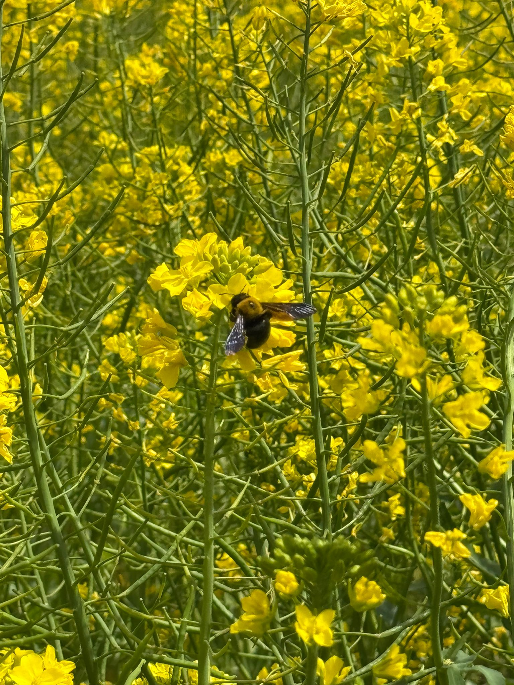

🐝 Steeve says:
My favorite website is YouTube:
YouTube
🐝 Steeve says:
I am interested in map making 🌍
Meven Steeve Perera

Hello! My name is Steeve.
I am an international student from Sri Lanka.
I love bees and nature.
I am mostly interested in nature and music.
In this class, I hope to learn more about map making.